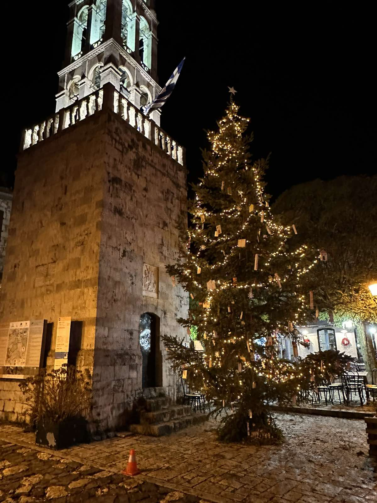
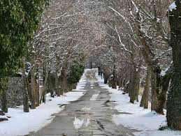
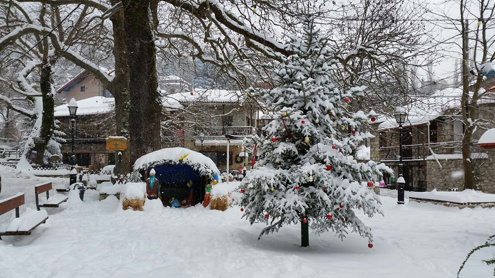

Χωρία με πλούσια ιστορία, απίστευτου φυσικού κάλλους αλλά και με αυθεντικές τοπικές γεύσεις για τισ φετινές γιορτές.
Ο τόπος: Πέτρινα αρχοντικά του 19ου αιώνα, ένας κεντρικός εμπορικός δρόμος και στο βάθος η χαράδρα του Λούσιου ποταμού. Αυτή είναι η αναλλοίωτη στον χρόνο εικόνα της Δημητσάνας, του ορεινού χωριού της Αρκαδίας που πάντα ενδείκνυται για μια γρήγορη απόδραση από την Αθήνα. Χτισμένο πάνω σε δύο λόφους, έχει ως μόνιμο σάουντρακ τα ορμητικά νερά του Λούσιου, ενώ σταθερά παρούσα είναι και η δροσιά που φέρνει το ποτάμι, ειδικά τα βράδια. Μπορεί τα αγριολούλουδα να οργιάζουν την άνοιξη, αλλά και το φθινόπωρο το εντυπωσιακό φαράγγι, που απλώνεται σε μήκος 15 χλμ., γεμίζει χρώμα χάρη στα μεικτά δάση και στην πλούσια χλωρίδα.
Τι να κάνω: Γεμάτη ιστορίες είναι και η ίδια η Δημητσάνα. Η Ιστορική Δημόσια Βιβλιοθήκη του χωριού άρχισε να λειτουργεί το 1764 και πολλές σελίδες από τους τόμους της χρησιμοποιήθηκαν για την παραγωγή φυσεκιών, δίνοντας στη Δημητσάνα τον τίτλο της «μπαρουταποθήκης της Πελοποννήσου». Στα στενά σοκάκια της στέκουν ακόμα οι οικίες του Παλαιών Πατρών Γερμανού και του Γρηγορίου Ε ́ , ενώ λίγο πιο έξω από τον οικισμό το Υπαίθριο Μουσείο Υδροκίνησης του Πολιτιστικού Ιδρύματος Ομίλου Πειραιώς αφηγείται τη διαχρονική σημασία του νερού για την επιβίωση των κατοίκων της περιοχής και τους διάφορους τρόπους χρήσης του στην παραγωγή αλευριού, μπαρουτιού και δέρματος. Κατά μήκος του κεντρικού δρόμου της Δημητσάνας θα βρείτε καφέ, ταβέρνες και καταστήματα με παραδοσιακά προϊόντα.
Ένα μυστικό: Με πύλη εισόδου τη Δημητσάνα, εκτός από φυσική ομορφιά, κρύβει και πλήθος ιστοριών: από την ύπαρξη του κρυφού σχολειού που λέγεται ότι λειτούργησε στην παλιά Μονή της Παναγίας Φιλοσόφου μέχρι το γεφύρι του Μαυρογιάννη ή Κοντού, που κατασκευάστηκε το 1864 για να ενώσει τη Ζάτουνα με το Παλαιοχώρι. Λίγο έξω από το Παλαιοχώρι θα δείτε μάλιστα το εκκλησάκι των Αγίων Αναργύρων με τον υπεραιωνόβιο πλάτανο, όπου λέγεται ότι μαζεύονταν οι Κολοκοτρωναίοι για να δώσουν οδηγίες κατά τη διάρκεια του Αγώνα το 1821.
Ο τόπος: Καπνός απ’ τα τζάκια υψώνεται πάνω από το φαράγγι του Λούσιου. Λιθόστρωτα καλντερίμια, σπίτια με ξύλινα χαγιάτια και εντυπωσιακές πόρτες, ένα καφενείο γεμάτο κόσμο, με νέους που παίζουν επιτραπέζια παιχνίδια και καλαμπουρίζουν με τους παππούδες δίπλα στη σόμπα. Η Στεμνίτσα είναι από τα πιο όμορφα και ατμοσφαιρικά χωριά της Αρκαδίας. Απέχει μόλις 39 χλμ. από την Τρίπολη.
Τι να κάνω: Η Σχολή Αργυροχρυσοχοΐας διατηρεί μια παράδοση αιώνων και βοηθάει το χωριό να παραμένει ζωντανό, λόγω των φοιτητών που έρχονται και σπουδάζουν εδώ. Το μεγάλο προσόν της Στεμνίτσας, ωστόσο, είναι η θέση της: αποτελεί εξαιρετική βάση για βόλτες στην ευρύτερη περιοχή, όπως στη γειτονική Δημητσάνα και το φαράγγι του Λούσιου. Αν ο καιρός το επιτρέπει, αξίζει να εντάξετε στο πρόγραμμά σας δραστηριότητες όπως ράφτινγκ στον Λούσιο, ποδήλατο βουνού και πεζοπορίες στο Μαίναλο.
Ένα μυστικό: Ο Παντοκράτορας που κοσμεί τον τρούλο και αρκετές ακόμα τοιχογραφίες του Αγίου Γεωργίου Στεμνίτσας φιλοτεχνήθηκαν από έναν μεγάλο Έλληνα ζωγράφο (και λογοτέχνη), που άφησε μεγάλη παρακαταθήκη στην ελληνική εικαστική σκηνή του 20ού αιώνα: τον Φώτη Κόντογλου.
Ο τόπος: Το χωριό ήταν γνωστό από τα αρχαία χρόνια με τον ιστορικό Παυσανία να αναφέρεται το 174 π.Χ. σε μία πόλη με την ονομασία Μεθύδριο, στα ερείπια της οποίας πιστεύεται πως χτίστηκε περίπου 4 αιώνες αργότερα η Βυτίνα. Ο οικισμός δεν έχει περισσότερους από 650 μόνιμους κατοίκους, ωστόσο, από τον Σεπτέμβριο και μετά σφύζει από ζωή. Τα τζάκια ανάβουν και τα εστιατόρια γεμίζουν ταξιδιώτες που ανυπομονούν να δοκιμάσουν τα καλύτερα τοπικά προϊόντα (το κρέας έχει σίγουρα τον πρωταγωνιστικό ρόλο), αφού πρώτα έχουν απολαύσει μία μεγάλη βόλτα σε συναρπαστικές πεζοπορικές διαδρομές μέσα σε ένα από τα ωραιότερα δάση της Πελοποννήσου.
Τι να κάνω: Θα μπορούσε να πει κανείς ότι ο πανέμορφος Δρόμος της Αγάπης στη Βυτίνα υπήρξε για την Ορεινή Αρκαδία ότι ήταν το Ζάππειο για την Αθήνα του 19ου αιώνα. Εκεί, κάτω από τους ανθισμένους σφένδαμους οι νέες κοπέλες και οι νέοι άνδρες του χωριού συναντιόντουσαν στις απογευματινές τους βόλτες προκειμένου να γνωριστούν καλύτερα. Πολλοί μεγάλοι έρωτες θα γεννήθηκαν στα ατελείωτα πέρα δώθε κάτω από τα ψηλά δέντρα ή στο μικρό ξέφωτο, εκεί όπου σήμερα οικογένειες και παρέες αράζουν για πικνίκ. Δίχως αμφιβολία η πιο ρομαντική στάση του οικισμού με μπόλικη ιστορία και αδιαπραγμάτευτη φυσική γοητεία.
Ο τόπος:Ο Επτάλοφος ή Αγόριανη όπως είναι περισσότερο γνωστό το χωριό, είναι αγαπημένη επιλογή για χειμερινές εξορμήσεις. Απλωμένη στα βορειοδυτικά του Παρνασσού στα 900 μέτρα υψόμετρο έχει παραδοσιακή αρχιτεκτονική, τρεχούμενα νερά, θέα και πυκνό ελατόδασος που την κάνουν ένα από τα πιο ενδιαφέροντα χωριά της περιοχής. Ρουστίκ ξενώνες και luxury σαλέ βρίσκονται παντού εντός και εκτός της Αγόριανης και φροντίζουν με τον καλύτερο τρόπο για τη διαμονή σας αλλά και για να περάσετε υπέροχα Χριστούγεννα.
Τι να κάνω: Θα κάνετε βόλτες στις ανηφορικές γειτονιές του χωριού, θα καθίσετε στην πλατεία για να χαζέψετε την κίνηση από τα αυτοκίνητα και τους ανθρώπους, θα περπατήσετε στο μικρό μονοπάτι που φθάνει στον καταρράκτη λίγο πιο πάνω από την πλατεία και θα οδηγήσετε στον ελατοσκέπαστο δρόμο μέχρι το χιονοδρομικό. Εάν ο καιρός το επιτρέπει, κάντε μια όμορφη περιπατητική βόλτα μέχρι το εκκλησάκι της Αγίας Τριάδας, που το κυκλώνει υπέροχο δάσος από έλατα, αλλά και προς την Αγία Παρασκευή, τη Βρωμόβρυση και την πηγή Βασιλική. Αν αγαπάτε το σκι σημειώστε πως απέχει μόλις 24 χιλιόμετρα από το Χιονοδρομικό Κέντρο Παρνασσού.